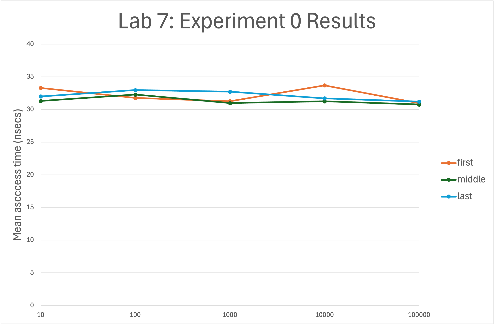

Lab 08: Timing List and Vector Operations

Objectives:
In this exercise, you will:
- Compare performance of
list<T>andvector<T>operations. - Introduce iterators.
- Introduce empirical analysis.
Introduction
Today, we want to time a few list and vector operations, using the STL list and vector templates. While we have talked in class about “Big Oh” notation, today’s lab should give you some hands-on experience with the difference between an \(O(1)\) operation and an \(O(n)\) operation.
For a given operation and several values of \(n\), our basic methodology will be to build a vector of length \(n\), measure how long that operation takes for the vector, build a list of length \(n\), and measure how long that operation takes for the list. By choosing five different values for n (10, 100, 1000, 10000, and 100000), we can then plot our measurements and see empirically how fast or slow a given operation is.
Getting Started
Accept the invitation to the lab and do git clone to get the files, as usual. Make sure your partner is part of the same Team and edit the README.md file and share your repo on github.com
Experiment 0: Vector Subscript
The purpose of this experiment is to get a feel for how to use the Timer class to time the vector subscript operation. This experiment contains a method named timeAccessAtIndex() that uses Timer to measure how long it takes to access the item at a given index in a vector. The run() method calls timeAccessesForVectorOfSize() for various vector sizes. This method calls the timeAccessesAtIndex() method three times, to see how long it takes to access the first, middle and last value in the vector.
Compile (make all) and run ./lab7.
To report your results, create an online spreadsheet – either Google Sheets or online Excel. On the worksheet, write Lab 7: Experiment 0 in the first row; on the next row create column-headings labeled size, first, middle, and last. Then add rows for each vector size (i.e., 10, 100, 1000, 10000, 100000). For each row size, enter the times your program displayed for accessing the first, middle, and last value in the vector of size size.
When you have entered all of your data, create a well-labeled line chart from your timing results. Your chart should look something like this:

Note these properties of the graph:
- The horizontal scale is logarithmic.
- The vertical lab gives the units.
- I have chosen to show the values with little circles – you can choose any shape (circle, square, etc.)
Analysis. On the chart shown above, the data are “noisy” (thanks to our imprecise clock), ranging from a low of 30.7667 nsec to a high of 33.6957 nsec. However the lines are basically flat – there is no significant change to the access time as the vector size increases by orders of magnitudes. If I use the spreadsheet to compute the averages for the first, middle, and last columns, they are all approximately the same. Your chart should be similar. (Note that I ran my tests on my MacBookPro. The values you get on the lab machines may be quite different.)
The relative flatness of these lines and their close proximity to one another indicate that the time to perform this operation remains constant as the size of the vector increases. These results thus indicate empirically that the vector subscript operation is an \(O(1)\) (i.e., constant time) operation.
Experiment 1: Vector & List Appending
In our next experiment, we will use a similar procedure to measure how long it takes to append an item to a vector and compare that with how long it takes to append an item to a list.
In main.cpp, comment out the lines referring to Experiment0 and uncomment the lines referring to Experiment1.
In your makefile, replace Experiment0.cpp with Experiment1.cpp on the 4th line.
Recompile your project (make all) and run ./lab7. As you can see, Experiment1 contains code to time how long it takes to append a value to a vector. It does this two ways:
- It first invokes
timeAppendToVectorOfSize(n)for varying values of n. - It then uses
timeRepeatedAppendUntilVectorIsSize(n)to measure the average time an append operation takes as a vector grows very large.
Our timeAppendToVectorOfSize(n) method uses an approach similar to that of Experiment0, but timing how long it takes the vector push_back(item) method to append a single value. By contrast, our timeRepeatedAppendUntilVectorIsSize(n) starts with an empty vector and then times the average length of time to append a value, as push_back() is called repeatedly.
Your task is to write two methods that do the same things for lists:
timeAppendToListOfSize(n)that can be used to measure the average time to append an item to alistof size n; andtimeRepeatedAppendUntilListIsSize(n)that measures the average time an append operation takes as alistgrows very large.
Using the existing vector methods in Experiment 1 as a model, write these two methods; then compile and run the executable to display the append times for both vectors and lists.
When you have good data, return to your spreadsheet. Create a new worksheet, and label the first row Lab 7: Experiment 1. On the next row, place column headings for size, vector, and list. Then add a separate row for each size (10, 100, 1000, 10000, and 100000). Add your data to your worksheet; then create a chart similar to that of Experiment0.
Study your chart. Using it and the data in your spreadsheet, answer the following questions on your spreadsheet, below your chart:
- What does your data indicate about the time required to append an item to a vector as the vector grows larger? Is the timing behavior produced by
timeAppendToVectorOfSize(n)consistent with that oftimeRepeatedAppendToVectorOfSize(n)? Explain why or why not. What is the “Big Oh” notation for each? (Remember that our vector’s size is increasing exponentially.) - What does your data indicate about the time required to append an item to a list as the list grows larger? Is the timing behavior produced by
timeAppendToListOfSize(n)consistent with that oftimeRepeatedAppendUntilListIsSize(n)? Explain why or why not. What is the “Big Oh” notation for each? - What can you conclude about the time required to append an item to a vector compared to a list, as each gets large?
Experiment 2: Vector & List Prepending
Our final experiment is to compare how long it takes to prepend an item to a vector, compared to a list.
In main.cpp, comment out the lines referring to Experiment1 and uncomment the lines referring to Experiment2. In the makefile, change SOURCES to Experiment2.cpp.
Recompile your project and run Experiment2 as it is written. As you can see, Experiment2 contains code to time how long it takes to prepend a value to a vector. It does this two ways:
- It first invokes
timePrependToVectorOfSize(n)for varying values of n. - It then uses
timeRepeatedPrependUntilVectorIsSize(n)to measure the average time a prepend operation takes as a vector grows very large.
Our timePrependToVectorOfSize(n) method uses an approach similar to that of Experiment1, but the STL vector template does not provide a push_front() method by which we can prepend a value. However, STL does provide a generic insert() algorithm that we can use for this task. More precisely, the statement:
insert(iterator, value);will insert value at the position indicated by iterator.
An iterator is an abstract pointer. Every STL container provides at least two methods that return iterators:
begin(), that returns an iterator to the first item in the container; andend(), that returns an iterator to the first location beyond the last item in the container.
Thus, we can use the statement:
insert(v.begin(), i);to prepend the value of our loop-control variable i to our vector.
Our timeRepeatedPrependUntilVectorIsSize(n) method also uses the STL insert() method.
Your task is to write two methods that do the same things for lists:
timePrependToListOfSize(n)that can be used to measure the average time to prepend an item to a list of size n; and
timeRepeatedPrependUntilListIsSize(n)that measures the average time a prepend operation takes as a list grows very large.
Using the existing Experiment 2 vector methods as a model, write these two methods; then invoke them so that Experiment2 displays the append times for both vectors and lists.
When you have good data, return to your spreadsheet. Create a new worksheet, and label the first row Lab 7: Experiment 2. On the next row, place column headings for size, vector, and list. Then add a separate row for each size (10, 100, 1000, 10000, and 100000). Add your data to your worksheet; then create a chart similar to that of Experiment1.
Study your chart. Using it and the data in your spreadsheet, answer the following questions on your spreadsheet, below your chart:
- What does your data indicate about the time required to prepend an item to a vector as the vector grows larger? Is the timing behavior produced by
timePrependToVectorOfSize(n)consistent with that oftimeRepeatedPrependToVectorOfSize(n)? Explain why or why not. What is the “Big Oh” notation for each? - What does your data indicate about the time required to prepend an item to a list as the list grows larger? Is the timing behavior produced by
timePrependToListOfSize(n)consistent with that oftimeRepeatedPrependUntilListIsSize(n)? What is the “Big Oh” notation for each? - What can you say about the time required to prepend an item to a vector, compared to a list, as each gets large?
Finally
Unlike vector, the STL list does provide a push_front() method that works just like push_back() only on the other end of the list. In your timePrependToListOfSize(n) method, comment out your call to insert() and replace it with a call to push_front(). Then rerun your experiment. Add a new column named list (push_front) to your Experiment2 spreadsheet. Under it, add the timing results for this revised version to your spreadsheet and its chart. Then answer the following question below your other answers on your Experiment2 spreadsheet:
- How does the timing for prepending using
push_front()compare to the timing of prepending usinginsert()? Is the “Big Oh” the same or different for these two different ways of prepending?
Whew! Congratulations, you’re done (after doing the submission below).
Submission
👉 Download a PDF version of your spreadsheet and put it in your directory, named Lab7Results.pdf. Make sure your PDF contains all 3 worksheets!
Make sure you commit all your files and changes to github for grading.
Grading Rubric
Total score: 20 pts
- 9 pts: 3 pts each for proper implementation of Experiment 0, 1, and 2.
- 5 pts for correct graphs.
- 6 pts for answering the questions.
Ways students have lost points in the past:
- -2: Can’t make project, There are persisting errors.
- -5: No PDF analyzing the results
- -2: late submission